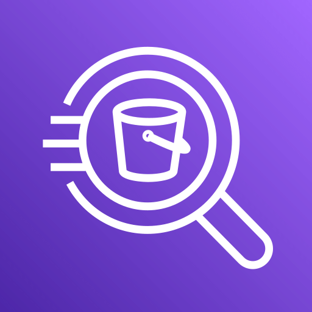
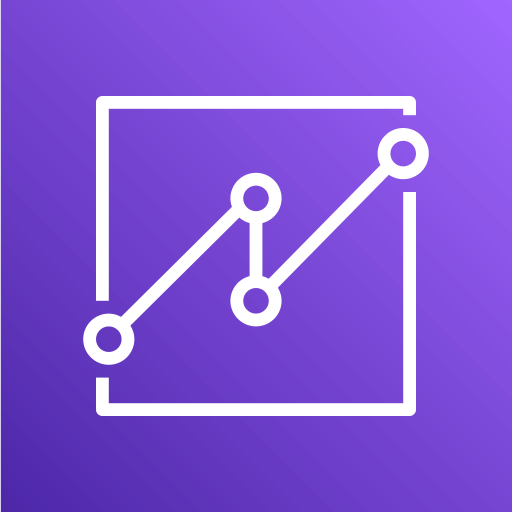
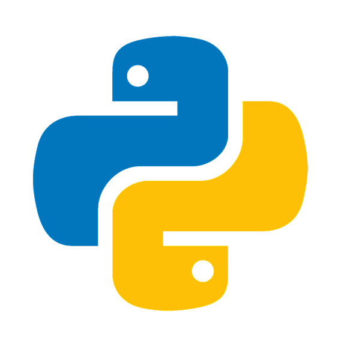
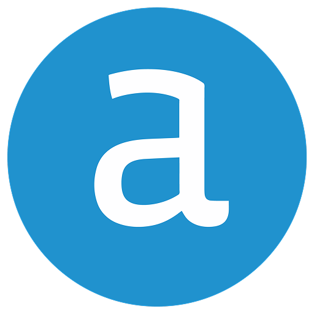

Hard Skills
AWS Glue
- Criação e gerenciamento de pipelines ETL para integração de dados.
- Automação, modernização e otimização de fluxos de dados entre serviços AWS.
- Transformação e preparação de dados para análise e relatórios.
- Configuração e manutenção de jobs, garantindo performance e confiabilidade.

AWS Athena
- Consultas SQL diretas em dados armazenados no S3.
- Criação e gerenciamento de tabelas e bancos de dados.
- Otimização de consultas para performance e custo.
- Integração com dashboards e relatórios analíticos.

AWS QuickSight
- Criação de dashboards interativos para análise de dados.
- Configuração de filtros, métricas e visualizações customizadas.
- Design de dashboards intuitivos e funcionais, com criação de protótipos no Figma.

AWS S3
- Armazenamento e organização de dados em buckets S3.
- Integração com serviços AWS para pipelines de dados.

Python
- Desenvolvimento de scripts para análise de dados e automação de processos.
- Manipulação e transformação de dados utilizando Pandas e PySpark.
- Criação de testes e automações de interação com web usando Playwright.
- Integração de dados e geração de relatórios para suporte à tomada de decisão.
SQL
- Criação e execução de consultas para extração e análise de dados.
- Modelagem, criação e manutenção de tabelas SOT e SPEC.
Copilot
- Uso de IA para otimizar processos e acelerar fluxos de trabalho.
- Criação e configuração de agentes inteligentes para automação de tarefas.
- Integração com dados e sistemas internos para suporte à tomada de decisão.
- Desenvolvimento de soluções que aumentam eficiência e reduzem trabalho manual.
Stackspot
- Desenvolvimento de agentes automatizados para execução de tarefas repetitivas.
- Aplicação de IA para agilizar processos e melhorar resultados operacionais.
- Implementação de soluções que aumentam produtividade e reduzem esforço manual.
- Integração com dashboards e relatórios analíticos.
SharePoint
- Criação e gestão de sites, bibliotecas e listas para organização de informações.
- Automação de processos internos e fluxos de trabalho colaborativos.
- Integração com dashboards, relatórios e serviços AWS para análise de dados.
- Gestão de permissões e conteúdo para equipes e stakeholders.
Power Apps
- Desenvolvimento de aplicações low-code para automação e suporte a processos.
- Integração com dados de SharePoint, SQL e serviços AWS.
- Criação de formulários e interfaces interativas para usuários finais.
- Automação de tarefas repetitivas e otimização de fluxos de trabalho.
Power Automate
- Criação e automação de fluxos de trabalho entre aplicativos e serviços.
- Automatização de processos manuais e envio de notificações inteligentes.
- Integração com Excel, SharePoint, SQL e serviços AWS para análise de dados.
- Otimização de tarefas e aumento de produtividade em processos internos.
GitHub
- Controle de versão e gerenciamento de código-fonte em projetos colaborativos.
- Criação e manutenção de repositórios, branches e pull requests.
- Documentação e integração de projetos para equipes de desenvolvimento.
Excel
- Análise e manipulação de dados usando fórmulas e tabelas.
- Criação de relatórios com tabelas dinâmicas para suporte à decisão.
- Organização e tratamento de dados para preparação de bases.
- Ingestão de dados do Excel em serviços AWS para análise e integração.

Alteryx
- Preparação, transformação e integração de dados de múltiplas fontes.
- Criação de workflows automatizados para análise e limpeza de dados.
- Modernização de fluxos Alteryx para a AWS melhorando desempenho e reduzindo custos.
- Integração com dashboards e sistemas analíticos para suporte à decisão.